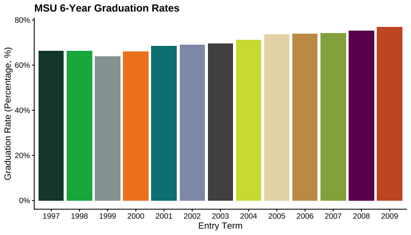
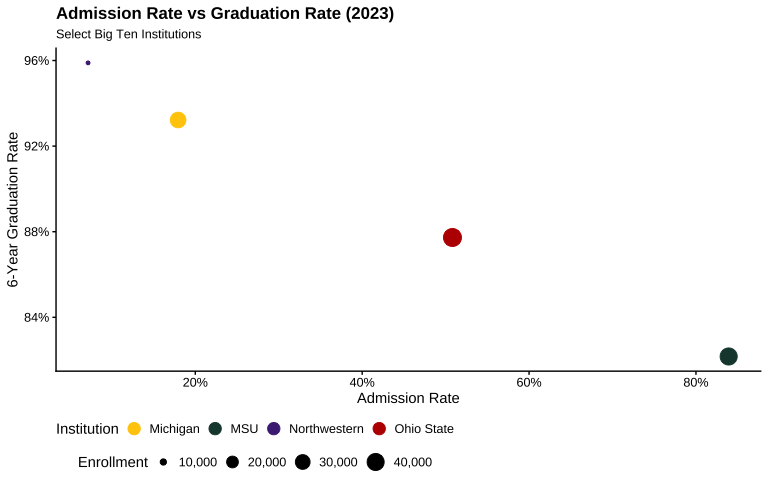

The MSUthemes package provides colour palettes and themes for Michigan State University (MSU) and comprehensive colour support for all Big Ten Conference institutions. The package includes MSU-specific palettes (sequential, diverging, and qualitative) designed to align with MSU’s branding guidelines, uses the Metropolis font (MSU’s chosen font) in the construction of the plots, as well as the primary and secondary colour palettes for all 18 Big Ten institutions, making it ideal for multi-institutional comparisons and collaborative research visualizations using ggplot2.
This package is inspired by the RSSthemes package and based on the work of Andreas Krause, Nicola Rennie, and Brian Tarran. While the original RSSthemes package focused on the Royal Statistical Society (RSS) branding, this package adapts the concepts to fit MSU’s visual identity. The MSUthemes package uses the RSSthemes framework, replaces the RSS colour palettes and font with MSU colour palettes and font, respectively, and adds comprehensive Big Ten Conference institutional colours with reliable institution-to-colour matching capabilities.
The authors of the RSSthemes package have created an excellent website discussing the ‘Best Practices for Data Visualisation’, published by the Royal Statistical Society. The RSS companion website is a great resource for anyone interested in data visualization and provides valuable insights into effective data communication. The MSUthemes package aims to bring these best practices to the MSU community, helping users create visually appealing and informative graphics that mirror MSU’s branding guidelines.
Colour Palettes
The colour palettes, and associated variables, are displayed in the MSUthemes Colour Palettes vignette (see vignette("colour_palettes", package = "MSUthemes")).
MSU Colour Palettes
The MSU colour palettes provided within MSUthemes are based on the official MSU branding guidelines, which can be found here: https://brand.msu.edu/visual/color-palette. The official MSU colour palettes include the primary colours green and white, as well as secondary colours black, silver, gray, and accent colours.
The MSUthemes package includes several MSU palette types:
-
Sequential palettes:
msu_seq,msu_seq_red,msu_seq_blue, etc. -
Diverging palettes:
msu_div -
Qualitative palettes:
msu_qual1,msu_qual2
Individual MSU colours are also available as constants (e.g., msu_green, msu_orange, msu_teal, and msu_grellow).
Big Ten Conference Colours
The package provides comprehensive colour support for all Big Ten Conference institutions, making it ideal for multi-institutional comparisons and collaborative research visualizations.
Named Colour Vectors for Reliable Matching: - bigten_colors_primary: Named vector for exact institution-to-colour matching - bigten_colors_secondary: Named vector for secondary colours
Big Ten Dataset
The package includes a comprehensive dataset (BigTen) containing historical institutional data for all 18 Big Ten Conference members from 1996-2023:
- Institutions: All current Big Ten members (including UCLA, USC, Oregon, and Washington added in 2024)
- Variables: Enrollment, graduation rates, admission rates, tuition, demographics, and more
- Source: Constructed from the College Scorecard dataset
This dataset is perfect for creating examples and exploring multi-institutional comparisons.
Installation
You can install MSUthemes from CRAN:
install.packages("MSUthemes")Or install the development version from GitHub:
# install.packages("devtools")
devtools::install_github("emilioxavier/MSUthemes", build_vignettes=TRUE)Quick Start
library(MSUthemes)
library(ggplot2)
library(dplyr)
# Simple MSU-branded plot
MSU_df <- filter(BigTen, name == "MSU")
ggplot(MSU_df, aes(x = entry_term, y = UGDS)) +
geom_col(fill = msu_green) +
scale_y_continuous(labels = scales::comma) +
labs(title = "MSU Undergraduate Enrollment",
x = "Entry Term", y = "Enrollment") +
theme_MSU()
Note: The colour palettes, and associated variables, are displayed in the MSUthemes Colour Palettes vignette (see
vignette("colour_palettes", package = "MSUthemes")).
Usage Examples
The MSUthemes package includes a comprehensive dataset (BigTen) with historical data (1996-2023) for all 18 Big Ten institutions, making it easy to create relevant examples and explore the colour palettes.
Using MSU Palettes
library(ggplot2)
library(dplyr)
library(MSUthemes)
# Filter MSU data from the included BigTen dataset
MSU_df <- filter(BigTen, name == "MSU")
# MSU sequential palette - showing enrollment trends
ggplot(MSU_df,
aes(x = entry_term, y = UGDS, fill = UGDS)) +
geom_col() +
scale_fill_msu_c(palette = "msu_seq") +
scale_y_continuous(labels = scales::comma) +
scale_fill_continuous(labels = scales::comma) +
labs(title = "MSU Undergraduate Enrollment Over Time",
x = "Entry Term",
y = "Undergraduate Enrollment") +
theme_MSU() +
theme(legend.position = "right")
# MSU qualitative palette - comparing recent cohorts
ggplot(slice(MSU_df, 2:14),
aes(x = factor(entry_term), y = C150_4, fill = factor(entry_term))) +
geom_col() +
scale_y_continuous(labels = scales::percent) +
scale_fill_msu_d(palette = "msu_qual1", guide = "none") +
labs(title = "MSU 6-Year Graduation Rates",
x = "Entry Term",
y = "Graduation Rate (Percentage, %)",
fill = "Entry Term") +
theme_MSU()
Using Big Ten Colours for Multi-Institutional Comparisons
The MSUthemes package provides three methods for using Big Ten institutional colours:
Method 1: Named vectors for specific institutions (recommended)
This ensures exact colour matching regardless of data order:
# Get 2023 data for all Big Ten institutions
BigTen_2023 <- filter(BigTen, entry_term == 2023)
ggplot(BigTen_2023,
aes(x = reorder(name, UGDS), y = UGDS, fill = name)) +
geom_col() +
scale_fill_manual(values = bigten_colors_primary, guide = "none") +
scale_y_continuous(labels = scales::comma) +
labs(x = NULL, y = "Undergraduate Enrollment",
title = "Big Ten Institutions Enrollment",
subtitle = "Fall 2023") +
theme_MSU() +
theme(axis.text.x = element_text(angle = 45, hjust = 1))
Method 2: Helper function with error checking
# Select specific institutions and get their colours
my_institutions <- c("Michigan", "Ohio State", "MSU", "Northwestern")
my_colors <- get_bigten_colors(my_institutions, type = "primary")
ggplot(filter(BigTen_2023, name %in% my_institutions),
aes(x = ADM_RATE, y = C150_4, color = name, size = UGDS)) +
geom_point() +
scale_color_manual(values = my_colors) +
scale_x_continuous(labels = scales::percent) +
scale_y_continuous(labels = scales::percent) +
scale_size_continuous(labels = scales::comma) +
guides(color = guide_legend(nrow = 1, order = 1, override.aes = list(size = 4)),
size = guide_legend(nrow = 1, order = 2)) +
labs(title = "Admission Rate vs Graduation Rate (2023)",
subtitle = "Select Big Ten Institutions",
x = "Admission Rate", y = "6-Year Graduation Rate",
color = "Institution", size = "Enrollment") +
theme_MSU() +
theme(legend.box = "vertical",
legend.direction = "horizontal")
Method 3: Use aggregate palette for all 18 institutions
ggplot(BigTen_2023, aes(x = reorder(name, UGDS), y = UGDS, fill = name)) +
geom_col() +
scale_fill_msu_d(palette = "bigten_primary") +
labs(title = "2023 Big Ten Undergraduate Enrollment",
x = NULL, y = "Undergraduate Enrollment") +
theme_MSU() +
theme(axis.text.x = element_text(angle = 45, hjust = 1),
legend.position = "none")Focusing on Individual Institutions
You can focus on a single institution using its official colours:
# Focus on Michigan with its official primary colour
Michigan_df <- filter(BigTen, name == "Michigan")
ggplot(Michigan_df, aes(x = entry_term, y = UGDS)) +
geom_col(fill = bigten_colors_primary["Michigan"]) +
scale_y_continuous(labels = scales::comma) +
labs(title = "University of Michigan Enrollment Trends",
x = "Entry Term",
y = "Undergraduate Enrollment") +
theme_MSU()Typography (fancy word for fonts)
MSU’s primary typeface is the Metropolis font and it is freely available to download. More information about MSU’s typography guidelines can be found here: https://brand.msu.edu/visual/typography
The MSU typography webpage provides examples of the Metropolis font in various weights and styles, along with an alternative serif font Garamond for “limited contexts that call for more traditional or formal design.” A secondary typeface Liberator, an all-uppercase font for “headlines for advertising, billboards and other display-type content” that “should not be used for body copy or websites.” Unfortunately, the Liberator font is not freely available but you can request it by clicking the “Request font download” button on MSU’s Typography webpage and sending the University Communications group an email.
Installing Metropolis Fonts as a System Font
For optimal performance and to avoid plot dimension changes, we recommend installing Metropolis as a system font.
Either download the Metropolis font from https://fontsource.org/fonts/metropolis and install it using the standard OS tool. Alternatively, the font files are included in the MSUthemes package at inst/fonts/metropolis_5.1.0/. The following instructions should enable you to install Metropolis as a system font.
macOS
- Locate the font files: In R, run
system.file("fonts/metropolis_5.1.0", package = "MSUthemes")to find the directory - Open Finder and navigate to that directory
- Select all
.ttffiles - Double-click any selected font file and click the “Install” button in Font Book
- Restart R/RStudio/VS Code
Windows
- Locate the font files: In R, run
system.file("fonts/metropolis_5.1.0", package = "MSUthemes")to find the directory - Open File Explorer and navigate to that directory
- Select all
.ttffiles - Right-click and select “Install” (or “Install for all users” if available)
- Restart R/RStudio/VS Code
Linux
Locate the font files: In R, run
system.file("fonts/metropolis_5.1.0", package = "MSUthemes")to find the directory-
Copy the
.ttffiles to~/.fonts/(create the directory if it doesn’t exist): Restart R/RStudio/VS Code
If you don’t install Metropolis as a system font, the package will automatically use it via the showtext package, but this may cause slight changes to plot dimensions.
Add Additional Fonts to R for ggplot2
Dan Oehm has a great blog post on adding additional fonts to ggplot2 using the showtext package. Please see the showtext’s GitHub page for more information.
Learn More
For more detailed examples and comprehensive guides on using MSUthemes, including:
- Complete examples with base R and ggplot2
- Advanced palette customization
- Exporting publication-quality graphics
See the package vignettes:
- Introduction to MSUthemes - Getting started guide with examples
- Colour Palettes - Complete palette reference
- Installing Metropolis Font - Font installation guide
Or view them in R:
browseVignettes("MSUthemes")
# or
vignette("introduction", package = "MSUthemes")
# or
vignette("colour_palettes", package = "MSUthemes")Have a suggestion? Need help? Found a bug?
- Contact Emilio at emilio@msu.edu OR emilio.esposito@gmail.com
- Submit a request or issue via GitHub
Code of Conduct
MSUthemes’ Code of Conduct is essentially Code of Conduct version 3.0 provided by Contributor Covenant. The full text of the Code of Conduct can be found in the CodeOfConduct.md file.
License
MSUthemes © 2025 by Emilio Xavier Esposito is licensed under Creative Commons Attribution-ShareAlike 4.0 International